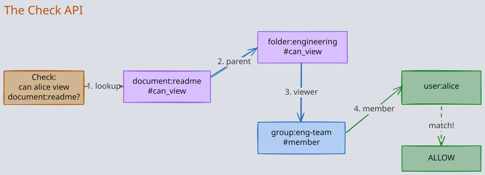
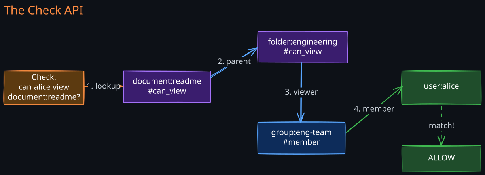

The Story
Google Zanzibar handles authorization for Google Drive, YouTube, Cloud, and Maps — processing millions of permission checks per second at under 10ms p95 latency. The genuinely interesting technical detail is “leopard indexing”: precomputing group membership expansions so that checking “does user X have access to document Y?” doesn’t require traversing the full relationship graph at query time. It’s essentially materialized views for authorization — the same technique databases use to speed up reads, repurposed for permission checks. Every time you share a Google Doc and your collaborator can see it within seconds, Zanzibar evaluated a graph traversal, checked it against a precomputed index, and returned the answer faster than a database query.
1. The Authorization Problem at Scale
Every large system eventually needs to answer the question: “Does user X have permission Y on object Z?” The naive approach is an Access Control List (ACL) — a table mapping (object, user, permission) triples. This works at small scale but collapses under three pressures:
Combinatorial explosion. A system like Google Drive has billions of documents, billions of users, and permissions that cascade through folder hierarchies, groups, and organizational units. Materializing every effective permission into a flat ACL table would produce trillions of rows, and every group membership change would require updating millions of entries.
Consistency requirements. When a user removes a collaborator from a document, the permission change must take effect immediately — or at least before the removed user’s next access attempt. In a globally distributed system, achieving this without unacceptable latency is hard.
Cross-service authorization. Google’s services (Drive, YouTube, Calendar, Cloud IAM) each have their own permission models but share users and groups. A unified authorization system must support diverse models without forcing every service into one schema.
RBAC (Role-Based Access Control) helps with the first problem by grouping permissions into roles, but it cannot express relationships like “anyone who can edit the parent folder can view this document.” ABAC (Attribute-Based Access Control) is more flexible but computationally expensive and hard to audit. Zanzibar introduces a third model — Relationship-Based Access Control (ReBAC) — that treats relationships as the fundamental primitive.
2. Relationship-Based Access Control
1. The Relation Tuple
Zanzibar stores all authorization data as relation tuples in the form:
object#relation@user
Examples:
document:readme#owner@user:alice— Alice owns the readme documentfolder:engineering#viewer@group:eng-team#member— members of eng-team can view the engineering folderdocument:readme#parent@folder:engineering— the readme document is inside the engineering folder
The third example is the key insight: objects can have relationships to other objects, not just to users. This creates a directed graph of relationships that Zanzibar traverses to compute permissions.
2. Why Tuples Instead of Rules
Traditional authorization engines evaluate rules at check time: “if user has role X and resource has attribute Y, then allow.” This is flexible but requires the engine to understand every service’s domain model.
Zanzibar inverts this: the authorization data is the graph of relationships, and the authorization logic is a graph traversal. Adding a new permission model means adding new tuple types and traversal rules — not changing the engine. This separation of data from logic is what allows Zanzibar to serve as a unified authorization backend for hundreds of Google services.
3. Namespace Configuration and Rewrite Rules
Each object type is defined in a namespace configuration that specifies which relations exist and how permissions are computed from those relations.
name: "document"
relation { name: "owner" }
relation { name: "editor" }
relation { name: "viewer" }
relation { name: "parent" }
relation {
name: "can_edit"
userset_rewrite {
union {
child { computed_userset { relation: "editor" } }
child { computed_userset { relation: "owner" } }
}
}
}
relation {
name: "can_view"
userset_rewrite {
union {
child { computed_userset { relation: "viewer" } }
child { computed_userset { relation: "can_edit" } }
child { tuple_to_userset {
tupleset { relation: "parent" }
computed_userset { relation: "can_view" }
} }
}
}
}
1. Rewrite Operators
The namespace configuration supports three operators for composing permissions:
Union — permission is granted if the user satisfies any of the child conditions. This is the most common operator. The can_view rule above uses union: a user can view if they are a direct viewer, an editor, an owner, or can view the parent folder.
Intersection — permission is granted only if the user satisfies all child conditions. This enables patterns like “must be both a member of the organization AND explicitly granted access.”
Exclusion — permission is granted if the user satisfies the first condition but NOT the second. This models “everyone in the group except banned users.”
2. Tuple-to-Userset: Traversing Relationships
The tuple_to_userset construct is what makes ReBAC powerful. It says: “follow the parent relation from this document to find its parent folder, then check if the user has can_view on that parent.” This single construct enables permission inheritance through arbitrary hierarchies — folder trees, organizational units, team nesting — without materializing inherited permissions.
4. The Check API
The Check API is the core of Zanzibar. It answers: “Does user:X have relation R on object:O?”


1. Graph Traversal
Check works by traversing the relation tuple graph, guided by the namespace’s rewrite rules. Starting from the target object and relation, the engine:
- Looks up all tuples of the form
object:O#R@... - For each tuple, checks if the subject matches the query user
- If the relation has a rewrite rule, recursively evaluates each branch (union, intersection, exclusion)
- For
tuple_to_userset, follows the relationship to the referenced object and recurses
The traversal is a directed graph search. Zanzibar uses both BFS and DFS strategies depending on the expected graph shape:
- BFS works well for wide, shallow graphs (many direct permissions)
- DFS works well for deep hierarchies (folder nesting)
2. Cycle Detection
Because objects can reference each other (a group can contain another group, which contains the first), the relation graph may contain cycles. Zanzibar tracks visited nodes during traversal and short-circuits when a cycle is detected. Without this, a check could loop infinitely.
3. Request Fan-Out and Tail Latency
A single Check request can fan out into hundreds of sub-checks as it traverses group memberships and folder hierarchies. Zanzibar manages tail latency through:
- Request hedging — sending duplicate sub-requests and using whichever returns first
- Early termination — for union operations, returning
trueas soon as any branch succeeds - Deadline propagation — sub-checks inherit the parent’s deadline to prevent unbounded fan-out
5. Expand and Read APIs
1. Expand
The Expand API returns the full userset tree for a given object and relation — essentially answering “who has this permission and why?” It returns a tree structure showing each rewrite rule that contributed to the result.
This is critical for:
- Auditing — security teams need to understand why a user has access
- Debugging — engineers need to trace why a permission check succeeded or failed
- UI rendering — showing the sharing dialog in Google Drive (“shared with these people via these groups”)
2. Read (Reverse Lookup)
The Read API lists all tuples matching a filter, enabling reverse queries like “what objects can user:alice access?” This is computationally expensive because it requires scanning across potentially all objects, so Zanzibar optimizes it through indexing and pagination.
6. The New Enemy Problem and Zookie Tokens
1. The Problem
Consider this sequence of events:
- Alice shares
document:secretwith Bob - Bob reads the document and copies sensitive content to
document:leak - Alice discovers the leak and removes Bob’s access to
document:secret - Bob tries to read
document:secretagain
The authorization system must ensure that step 4 is denied. But in a globally distributed system, the removal in step 3 may not have propagated to all replicas. If Bob’s Check request hits a stale replica, it might still see the old tuple and grant access.
This is the “new enemy” problem: after revoking access, there is a window during which the revoked user can still access the resource.
2. Zookie Tokens
Zanzibar solves this with zookies (Zanzibar cookies) — opaque tokens that encode a Spanner timestamp. The protocol works as follows:
- When a client writes a tuple (e.g., removes Bob’s access), Zanzibar returns a zookie encoding the write’s commit timestamp
- The client stores this zookie (typically in the resource’s metadata)
- On subsequent Check requests, the client passes the zookie as a consistency token
- Zanzibar ensures the Check is evaluated against a snapshot at least as fresh as the zookie’s timestamp
This provides causal consistency without requiring global barriers. The content-change zookie guarantees that any Check after a permission change sees that change, but Checks on unrelated objects can still read from slightly stale replicas for better performance.
3. Tradeoff: Freshness vs. Latency
Without a zookie, Zanzibar serves Checks from the nearest replica, which may be a few seconds stale. With a zookie, Zanzibar may need to wait for a specific replica to catch up, adding latency. Applications choose their consistency level per-request:
- Permission changes pass zookies for strong consistency
- Routine access checks omit zookies for lower latency
- Security-critical operations always use the freshest available snapshot
7. Leopard Indexing
1. The Problem with Deep Groups
Checking membership in deeply nested groups (e.g., “is user:alice a member of org:google, which contains team:engineering, which contains group:backend?”) requires traversing many tuples. For hot paths like “can this user access any Google service?”, this traversal happens on every request.
2. Pre-Computed Denormalization
Leopard indexing is Zanzibar’s solution for these hot paths. It pre-computes and materializes group membership expansions into a denormalized index. When a tuple changes (user added to a group), Leopard incrementally updates all affected membership entries.
The tradeoff is clear:
- Faster reads — membership checks become direct lookups instead of graph traversals
- Slower writes — every group membership change triggers fan-out updates to the index
- Storage cost — the denormalized index can be much larger than the source tuples
Leopard is used selectively for high-traffic, deep-nesting scenarios. Most Check requests still use online graph traversal.
8. Integration with Spanner
Zanzibar stores all relation tuples in Spanner, Google’s globally distributed, strongly consistent database. This choice is fundamental to Zanzibar’s design:
- Global strong consistency — Spanner’s TrueTime-based transactions ensure that tuple writes are globally ordered. This is what makes zookie tokens work: a timestamp from one datacenter is meaningful at every other datacenter.
- Snapshot reads — Zanzibar reads tuples at a specific timestamp (the zookie or a recent safe point), leveraging Spanner’s multi-version concurrency control to serve consistent reads without blocking writes.
- Scalable storage — Spanner shards data across regions, handling the billions of tuples that Google’s authorization model requires.
Without a globally consistent datastore, Zanzibar would need complex application-level consistency protocols. Spanner pushes this complexity into the storage layer.
9. Performance at Scale
Zanzibar serves over 10 million Check requests per second at Google. Achieving this requires:
1. Caching Strategy
- Positive results are cached aggressively — “user has access” answers are cached with a TTL, since permissions are rarely revoked relative to the total check volume
- Negative results are cached briefly or not at all — caching “access denied” risks blocking legitimate access after a permission grant
- Cache keys include the evaluation timestamp — this prevents stale cache entries from being served when a zookie demands fresh data
2. Request Deduplication
When multiple concurrent requests check the same (object, relation, user) triple, Zanzibar coalesces them into a single evaluation. This is particularly effective during traffic spikes when many users access the same popular resource.
3. Geographic Distribution
Zanzibar services are deployed in every Google datacenter. For requests without zookies, the Check is served by the local replica. For requests with zookies, the service may need to read from a specific Spanner replica, adding cross-region latency.
10. Comparison with Other Authorization Models
| Model | Strengths | Weaknesses | Best For |
|---|---|---|---|
| ACL | Simple, direct | No inheritance, no groups at scale | Small systems, file permissions |
| RBAC | Role abstraction, well understood | Cannot express relationships, role explosion | Enterprise apps with fixed roles |
| ABAC | Highly flexible, context-aware | Expensive evaluation, hard to audit | Policy-heavy environments |
| ReBAC | Relationship inheritance, scalable | Complex graph traversal, harder to reason about | Large-scale multi-service systems |
ReBAC is not universally better. For a simple internal tool with three roles, RBAC is clearer and easier to audit. ReBAC’s power emerges when permissions must flow through object hierarchies, group nesting, and cross-service relationships.
11. Open-Source Implementations
Several systems implement Zanzibar’s model for use outside Google:
SpiceDB (by AuthZed) — the most mature implementation. Uses a custom graph engine, supports all Zanzibar operators, and provides a schema language inspired by the namespace configuration. Stores tuples in PostgreSQL, CockroachDB, or Spanner. Supports zookie-like consistency tokens.
OpenFGA (by Auth0/Okta) — emphasizes developer experience with a simpler schema language and a visual modeling tool. Trades some of Zanzibar’s advanced features (like Leopard indexing) for ease of adoption.
Permify — focuses on integration with existing systems, providing adapters for common databases and frameworks. Open-source with a hosted offering.
Key architectural differences from Google’s Zanzibar:
- None use Spanner (most use PostgreSQL or CockroachDB), so global consistency guarantees are weaker
- Leopard indexing is not implemented in any open-source version; they rely on caching and query optimization
- Scale is orders of magnitude smaller (thousands of checks/second vs. millions)
Revision Summary
- Zanzibar is Google’s globally distributed authorization system, built on Relationship-Based Access Control (ReBAC) where permissions are derived from a graph of relation tuples
- All data is stored as tuples in the form
object#relation@user, where subjects can be other objects — enabling permission inheritance through hierarchies - Namespace configurations define rewrite rules using union, intersection, and exclusion operators. The
tuple_to_usersetconstruct enables traversal across object relationships. - The Check API performs graph traversal guided by rewrite rules, using BFS/DFS strategies with cycle detection, request hedging, and early termination
- Zookie tokens solve the new enemy problem by encoding Spanner timestamps, providing causal consistency for permission changes without global barriers
- Leopard indexing pre-computes group membership for hot paths, trading write amplification for read performance
- Zanzibar stores tuples in Spanner for global strong consistency; TrueTime makes zookie timestamps globally meaningful
- Open-source implementations (SpiceDB, OpenFGA, Permify) capture the model but lack Spanner’s consistency guarantees and Leopard indexing
Deep Understanding Questions
-
The new enemy problem occurs when a revoked user accesses a stale replica. Zookies solve this for the revoking client, but what if a different client checks access for the revoked user without the zookie? How does Zanzibar handle this case? Ans:
-
Leopard indexing pre-computes group membership. If a top-level group (like
org:google) has millions of transitive members, how does Leopard handle a membership change without causing a write amplification storm? Ans: -
Zanzibar uses Spanner for globally consistent storage. What would break if you replaced Spanner with an eventually consistent datastore like Cassandra? Which guarantees would be lost? Ans:
-
The intersection operator requires a user to satisfy ALL conditions. How does the Check API evaluate intersection efficiently when each branch may require deep graph traversal? What is the worst-case latency? Ans:
-
Consider a cycle:
group:Acontainsgroup:B, andgroup:Bcontainsgroup:A. A user is a direct member ofgroup:A. What does cycle detection do during a membership check? Does the user end up as a member ofgroup:B? Ans: -
Caching “access denied” results is risky because a subsequent permission grant would not be reflected. But caching “access granted” is also risky because a revocation would not be reflected. How does Zanzibar balance these two risks in its caching strategy? Ans:
-
A single Check can fan out to hundreds of sub-checks. If the Zanzibar service is under load and sub-check latency increases, how does this affect the P99 latency of top-level Check requests? What circuit-breaking mechanisms prevent cascading overload? Ans:
-
Zanzibar’s tuple_to_userset enables permission inheritance through folder hierarchies. What happens if a folder tree is 50 levels deep? How does traversal depth affect Check latency, and what mitigations exist? Ans:
-
SpiceDB uses PostgreSQL instead of Spanner. Without TrueTime, how can SpiceDB implement zookie-like consistency tokens? What consistency guarantees are weaker? Ans:
-
An organization migrating from RBAC to Zanzibar-style ReBAC must represent existing roles as relation tuples. Describe how you would model a traditional RBAC system (users, roles, permissions) in Zanzibar’s tuple model. What are the pitfalls? Ans: